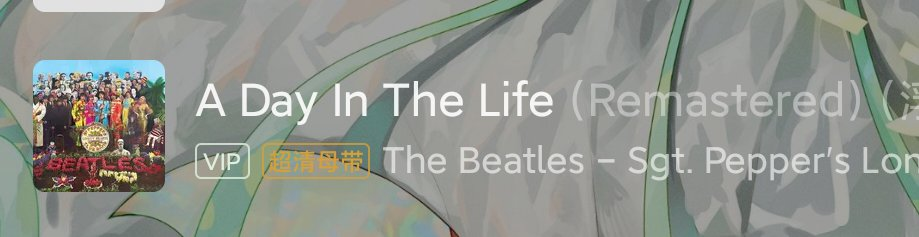

🍀🍥竹蜻蜓🍥🍀
@zqtlovekris99
@VVV8964 这个音乐太诡异了，你可以听一下这个，有类似的诡异感，我上次玩邮票听这个梦见我出车祸了吓死

VVV
@VVV8964
这个蘑菇的报告我其实还有一段特别惊悚诡异的幻觉没有放上去，现在重新整理了一下捋清了。
p2是Dr Seuss，p3是奶牛超梦的视频，应该是我诡异幻觉的灵感来源，可能引人不适，谨慎点击。 https://t.co/3l7Nsr4TGF https://t.co/JKdGEOjqEH